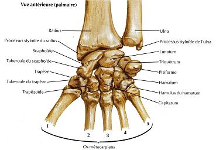
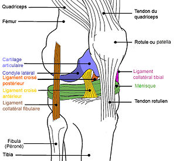

Hopital Grosbobo de Dijon
chere infirmiere et chère infirmiere
suite a l'accident qui c'est passer lors de l'intervention le 02/06/2018,
Nous somme dans l'obligation de monter un site avec les différente partie du corp.
afin qu'il n'y est plus d'erreur lors des intevention.
Poignet

Le radius est un des deux os de l'avant bras (avec l'ulna encore appelé cubitus). Il est situé entre l'humérus dans sa partie haute constituant ainsi pour partie l'articulation du coude et le carpe, constituant ainsi pour partie l'articulation du poignet.
Genou

Le genou est une Le genou est une articulation qui permet de joindre la jambe à la cuisse. Elle met en jeu trois os, le fémur, le tibia et la patella, par le biais de trois articulations, l'articulation fémoro-patellaire et la double articulation fémoro-tibiale. Le cartilage assure la fluidité des mouvements du genou. Le tissu élastique fin, le cartilage, protège l'os et fait en sorte que les surfaces de l'articulation glissent facilement les unes contre les autres. Le genou renferme deux types de cartilages articulaires: le cartilage fibreux (ménisque) et le cartilage hyalin. Le cartilage s'use non seulement au fil des ans, mais aussi en fonction de son utilisation. Le cartilage possède en outre une capacité de régénération limitée. La faible capacité de régénération du cartilage s'explique par l'absence de vaisseaux sanguins qui permettent un métabolisme important. Le tissu cicatriciel se compose essentiellement de cartilage fibreux, de moins bonne qualité que le cartilage hyalin d'origine. Par conséquent, de nouvelles déchirures et fissures apparaissent dans le cartilage après un certain temps.
Coude

Le coude (ou articulation olécranienne) est la partie du membre supérieur située entre le bras et l'avant-bras. Cette articulation comprend en avant la région du « pli du coude » (ou fosse cubitale). C'est un complexe articulaire synovial du membre supérieur humain reliant le bras à l'avant-bras. Il unit ainsi trois os entre eux : le radius, l'ulna (cubitus) et l'humérus.Elle est la réunion de trois articulations : huméro-ulnaire, huméro-radiale et radio-ulnaire proximale (supérieure). Lorsque l'avant-bras est tendu (extension complète), le bras et l'avant-bras ne sont pas alignés dans le plan frontal. Les deux parties forment un angle ouvert en dehors, d'environ 170° chez l'homme, 160° chez la femme ; c'est ce qui est appelé le valgus physiologique (on retrouve la même chose pour le genou).
Coude
En esperent que sa vous aide. Votre médecin Nour islam.Aftis